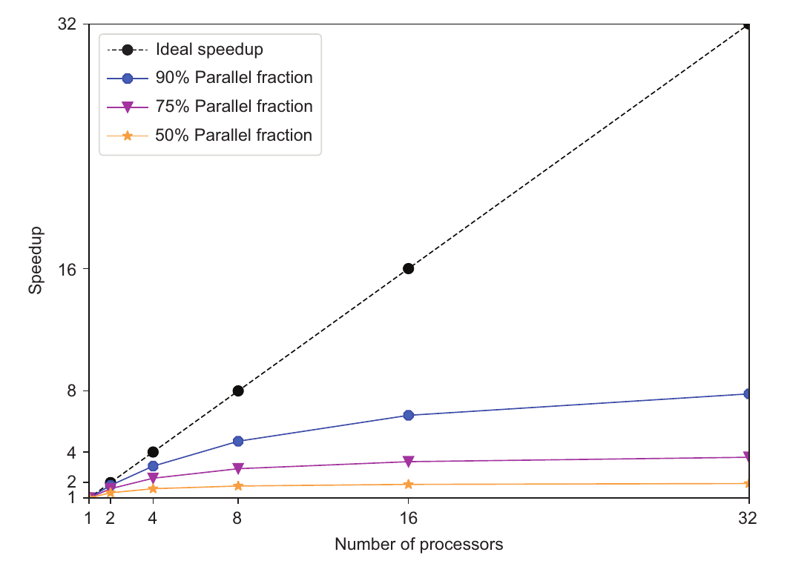
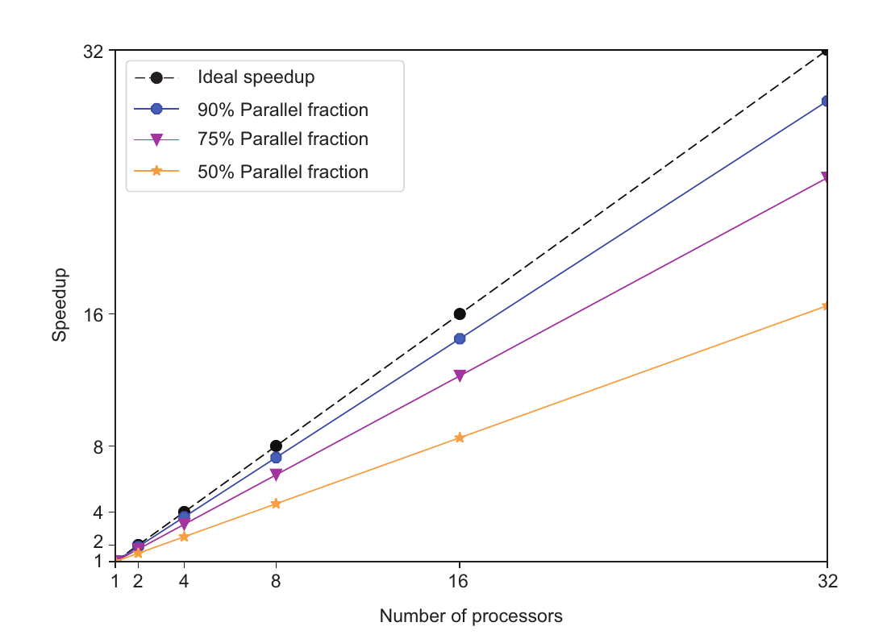
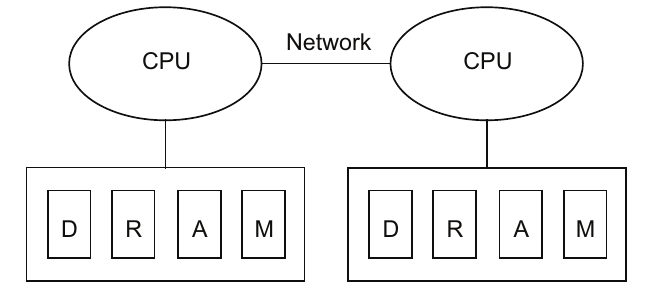
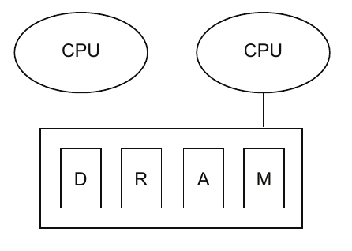
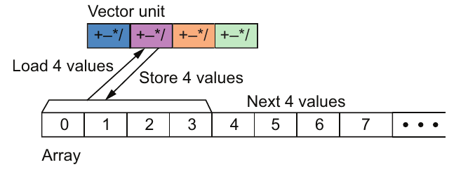
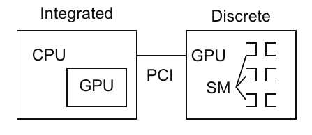
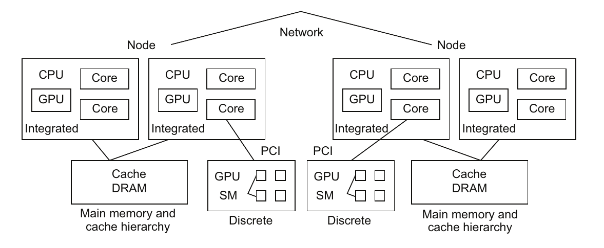
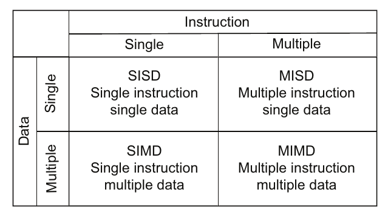

并行计算¶
学习目标¶
- 学习并行相关的基本概念
- 理解并发和并行的区别
- 了解常见的并行计算模型
1. 并发和并行¶
这个两个概念很容易混淆。“并发”是软件和业务的设计层面，而“并行”是硬件和物理的执行状态。 它们俩不是同一维度的对立概念。
1.1. 并发（Concurrency）—— 【软件与业务视角】¶
- 定义：指一个系统具有 组织、分发和处理多个同时涌入的任务的能力。它关注的是程序的 结构设计（Structure）。
- 工业含义：在一段时间内，有海量的独立请求（如用户登录、抢购、网络I/O）砸向系统，系统需要通过合理的调度（如线程池、异步事件、无锁队列）让所有任务都在推进。
- 一句话总结：有很多任务 需要 同时处理。
1.2. 并行（Parallelism）—— 【硬件与物理视角】¶
- 定义：指计算机系统在 同一个绝对的物理瞬间，利用两个或以上的物理执行单元（如 CPU核、GPU流处理器、MAC、ALU），同时推进两个或以上的数据流或指令流的物理执行状态。它关注的是硬件的 物理执行（Execution）。
- 工业含义：这是晶体管的物理蛮力。不管上层在干什么，只要同一时刻有两个及以上的核心在通电算东西，硬件就处于并行状态。
- 一句话总结：有很多指令/数据 正在 同时执行。
光看定义比较抽象，我们举一个食堂的例子。
1.3. 单核心并发（有并发，无并行）¶
微观上交替执行，复用同一组执行资源
- 场景设定：食堂比较穷，只请得起 一个打菜的大妈（单核 CPU）。此时，突然涌进了 3 个饥肠辘辘的学生（高并发请求）：张三要红烧肉，李四要蛋炒饭，王五要热干面。
- 大妈的操作（上下文切换）：大妈只有一双手，她不可能同时给 3 个人盛饭。于是她启动了“分时复用”绝技：
- 给张三盛了 1 勺红烧肉（执行任务 A 1毫秒）。
- 让张三等一下，转头给李四舀了 1 勺蛋炒饭（切换到任务 B 1毫秒）。
- 让李四等一下，转头给王五抓了一把热干面（切换到任务 C 1毫秒）。
- 再转回来给张三盛第 2 勺……
- 真相：由于大妈手速极快，在宏观的 10 秒钟内，3 个学生都在被伺候（高并发）。但在微观的 任意一个绝对瞬间，大妈手里只有一把勺子，只能给一个人盛饭（物理上无并行）。
1.4. 多核心并发（既有并发，又有并行）¶
现代互联网高并发的常态：利用硬件的【并行状态】去支撑软件的【并发需求】
- 场景设定：食堂发财了，一口气请了 3 个大妈（3核 CPU）。这时候又是那 3 个学生（高并发请求） 同时进来。
- 大妈的操作（多任务独立分配）：这下不用闪转腾挪了。3 个大妈各自站在自己的窗口。
- 大妈 1 全力伺候张三。
- 大妈 2 全力伺候李四。
- 大妈 3 全力伺候王五。
- 真相：在同一秒里，3 个大妈都在挥舞勺子。
- 从 物理硬件视角 看：3 个核心同时在通电干活，这叫【硬件处于并行状态】。
- 从 业务逻辑视角 看：她们在同时应对 3 个 互不相干、彼此独立 的用户请求（张三吃饱了不影响李四），这叫【高并发业务】。
1.5. 并行计算（无并发，有并行）¶
AI 大模型矩阵乘法的常态：集中力量办一件大事
- 场景设定：现在是下午两点，食堂不对外营业，没有任何学生涌入（零并发业务）。但是，食堂接到了学校的任务：半小时后有 700 人的旅行团要来，必须 紧急搓出 700 个肉丸子（一个宏观的、极度消耗算力的单一计算任务）。
- 大妈的操作（任务分工与数据聚合）：依然是这 3 个大妈（3核 CPU）。主管（程序员）走过来，对她们进行了 并行算法编排：
- “大妈 1，你负责搓前 233 个肉丸。”
- “大妈 2，你负责搓中间 233 个肉丸。”
- “大妈 3，你负责搓剩下的 234 个肉丸。”
- “你们三个，现在、立刻、同时动手！”
- 3 个大妈在同一个绝对瞬间，都在低头疯狂搓肉丸（极致的物理并行）。
- 15分钟后，3 个人把各自搓好的肉丸，同时倒入同一个大汤锅里（数据同步、结果聚合成最终的输出）。
- 真相：这里 没有任何高并发业务（没有 1 万个用户跟系统要数据），从头到尾只有 一个软件任务。多核在这里存在的唯一目的，就是通过协作，把这一个大任务的耗时死死砍掉 3 倍。这就是纯粹的【并行计算】。
1.6 终极对齐表¶
| 场景 | 到底请了几个大妈（物理核心） | 她们在干什么（业务场景） | 你的概念定性 |
|---|---|---|---|
| 场景 1 | 1 个大妈 | 轮流伺候 3 个要吃不同菜的学生 | 单核并发 |
| 场景 2 | 3 个大妈 | 各自同时伺候 3 个要吃不同菜的学生 | 多核并发 (互联网高并发) |
| 场景 3 | 3 个大妈 | 没人吃饭，3 人合力搓同一锅肉丸子 | 并行计算 (AI / 大模型矩阵乘法) |
2. 多任务并行执行 与 并行计算¶
在理解了并发与并行的底层物理机制后，我们可以进一步审视在现代多核/多芯片系统上，软件层面的两大演进方向：多任务并行执行（Multi-tasking Parallel Execution） 与 并行计算（Parallel Computing）。
它们虽然都利用了多核硬件的物理并行实力，但对于软件开发者来说，一个是“操作系统赠送的礼物”，另一个则是“需要重构思维的硬核苦工”。
2.1 核心区别：各过各的 vs 齐心协力¶
这两者的本质区别，在于 多个核心之间是否存在“为了同一个宏观目标的协同与数据绑定”。
| 维度 | 多任务并行执行（Multi-tasking） | 并行计算（Parallel Computing） |
|---|---|---|
| 任务主体 | 多个独立的软件/进程（如微信、浏览器、音乐播放器）。 | 单个特定的软件/算法（如大模型推理、视频渲染）。 |
| 数据关系 | 完全隔离（Shared Nothing）。各个任务的内存空间独立，彼此不知道对方的存在。 | 紧密交织（Tight Coupling）。大任务被化整为零，各核心之间需要频繁同步和集合通信。 |
| 核心矛盾 | 吞吐量（Throughput）：如何让更多的软件同时跑，系统不卡顿。 | 延迟（Latency）：如何让这一个沉重的任务用最快的速度算完。 |
2.2 为什么说“多任务并行执行”是免费的午餐？¶
对于应用层程序员或普通用户来说，多任务并行执行是一顿“免费的午餐（Free Lunch）”。
- 硬件与系统的自动红利： 当你买了最新的多核 CPU（比如 16 核处理器），你不需要对写好的代码做任何修改。哪怕你的软件是在 20 年前单核时代写出来的、完全不支持多线程的老古董，你依然可以享受多核带来的好处。
- 幕后英雄：操作系统调度器（OS Scheduler）： 实现这种并行的不是你（程序员），而是 操作系统。Linux 或 Windows 的内核调度器会自动扮演“交警”和“大管家”的角色。它发现核心 1 空闲，就把微信丢给核心 1；发现核心 2 空闲，就把浏览器丢给核心 2。
- 程序员的代价：0。你只管按传统的串行逻辑写代码，多任务如何并行的麻烦事，操作系统全替你抗下了。
2.3 为什么“并行计算”必须付出惨重的改进程序代价？¶
相反，真正的“并行计算” 绝非免费的午餐。如果你的程序面对的是一个 100 亿参数的大模型，或者一个 16384 \times 16384 的巨型矩阵相乘，哪怕你把电脑升级到 8 张显卡、成千上万个核心，如果不改进程序，它的运行速度和单核没有任何区别。
要吃上并行计算的红利，程序员必须在程序架构和算法上做出以下脱胎换骨的改变：
2.3.1. 数据与任务的硬核拆分（Decomposition）¶
你必须自己在代码里写明，如何把这一个大肉丸拆成 1000 份。
- 数据并行（Data Parallelism）：怎么把大矩阵切块（Block），确保每个线程（Thread）算哪几行、哪几列，边界绝不能越界或重叠。
- 模型/任务并行（Tensor/Pipeline Parallelism）：在大模型训练中，由于单张显卡装不下整个模型，你必须手动编写代码，控制哪些层跑在 GPU 0，哪些层跑在 GPU 1，并处理它们之间的前向与反向传播。
2.3.2. 跨核/跨机器的硬核同步与通信（Synchronization & Communication）¶
在并行计算中，核心之间不是孤立的。核心 1 算完前一步，必须把数据同步给核心 2。
- 程序员必须用专门的并行框架（如 CUDA shared memory、Triton blocks、或者是分布式集群中的 NCCL/MPI 集合通信）来显式地控制数据流动。
- 稍微控制不好，就会引入 死锁（Deadlock）、竞态条件（Race Condition），或者因为网络传输太慢让成千上万个核心原地假死等待（产生严重的通信壁垒）。
2.3.3. 从“串行逻辑思维”向“空间几何思维”的被迫转型¶
传统写业务代码，程序员的思维是 线性的（先做 A，再做 B，如果成功就做 C）。 而写并行计算代码（如 CUDA Kernel 或 Triton 算子），程序员的脑子里必须有一张 多维的硬件网格图。你需要同时想象几万个线程在空间上并排向前推进，每一行代码都意味着上万个算术单元同时导通。
总结¶
- 多任务并行执行 是“社会分工”：社会（操作系统）给每个人（核心）分配了不同的职业（软件），大家各过各的，效率自然提升，这是时代的红利。
- 并行计算 是“百人齐心搬泰山”：为了搬走这一座大山（单任务），必须有人精妙地设计指挥口号（并行算法）、划分每个人抬哪个角（数据切片）、统一步伐同时发力（同步机制）。如果没有这个精妙改进的程序去“指挥”，人再多（核心再多）也只是一盘散沙。
3. 互联网高并发 vs 并行计算¶
3.1 互联网说的高并发技术是什么？¶
互联网高并发（High Concurrency）的核心使命是 在硬件资源（CPU、内存、网络带宽）有限的情况下，尽可能高地提升系统的吞吐量（Throughput），并维护海量无序请求之间的“秩序”。
为了实现这个目标，互联网架构演进出了一个庞大的技术栈。从底层的单机代码控制，到上层的分布式架构，核心技术可以分为以下四大物理战线：
3.1.1. 单机本地战线：压榨单机多核的控制艺术¶
在单个服务器内部，面对成千上万的线程争抢资源，程序员需要利用高超的控制逻辑，让多核 CPU 既能并行干活，又不会发生踩踏。
- 线程池技术（Thread Pool）： 创建和销毁线程的系统调用代价极高。通过线程池提前缓存一批固定数量的线程，让它们轮流无休地处理涌入的请求，避免了频繁切换和线程暴涨导致的内存崩溃。
- 无锁与细粒度锁（Locking Strategies）：
传统的悲观锁（如
synchronized）会让没抢到锁的 CPU 核心进入阻塞挂起状态，代价极高。高并发广泛采用 CAS（Compare-And-Swap，比较并交换） 硬件级原子指令实现无锁结构，或者像ConcurrentHashMap一样使用 分段锁/桶级锁，让多核 CPU 在不同数据块上并行写入，规避锁冲突。 - I/O 多路复用（I/O Multiplexing）：
互联网高并发大多是“I/O 密集型”的（天天在等网络、等数据库）。传统的一个核心死等一个连接（BIO）会瞬间耗尽 CPU。现代高性能网络框架（如 Netty、Nginx）底层完全基于 Linux 的
epoll机制。一个核心利用事件驱动，同时监听几万个网络连接，谁有数据就处理谁，将 CPU 从无谓的等待中解放出来。
3.1.2. 缓存战线：用“空间”换“时间”的降维打击¶
高性能多核 CPU 内部靠 L1/L2/L3 Cache 续命，互联网高并发系统也是同理。最快的计算就是“不计算”，最快的数据库访问就是“不访问数据库”。
- 分布式应用缓存（Redis / Memcached）： 关系型数据库（如 MySQL）由于要支持复杂的事务和行锁，读写非常慢。高并发系统在数据库前架设一层完全基于 内存 的键值数据库 Redis。由于内存访问速度是固态硬盘的成百上千倍，Redis 单机就能轻松抗住每秒十几万次的读取压力。
- 多级缓存架构：
在系统各个节点层层设防。
- 本地缓存（Caffeine/Guava）：直接把最热的数据存在 JVM 堆内存里。
- 分布式缓存（Redis）：跨机器共享。
- CDN（内容分发网络）：把静态资源（图片、视频、JS文件）直接缓存在离用户最近的运营商机房，请求甚至不用到达互联网公司的核心服务器。
3.1.3. 异步与解耦战线：用“时间”换“空间”的缓冲艺术¶
当流量洪峰瞬间砸过来时（如电商秒杀），后台的流水线系统如果立刻同步处理（扣库存、发短信、生成订单、通知物流），系统会瞬间被冲垮。
- 消息队列（Message Queue - Kafka / RocketMQ）： 高并发的核心核心武器。它在前端服务和后端业务之间筑起了一座巨大的 流量蓄水池。
- 削峰填谷：秒杀请求涌入时，前端服务只负责把请求丢进队列（耗时仅几毫秒），然后立刻对用户返回“排队中”。后端的订单系统再根据自己的吞吐能力，像喝水一样匀速地从队列里消费请求。
- 异步解耦：下单成功后，发短信、送积分等非核心业务，全部通过消息队列异步通知其他系统去干，主流程不需要原地死等结果返回。
3.1.4. 分布式与集群战线：人多力量大的“水平扩展”¶
单台服务器的物理极限（功耗墙、内存槽限制）是不可逾越的。高并发的终极解决方案是引入“无状态”设计，实施 水平扩展（Scale-Out）。
- 负载均衡（Load Balancing - Nginx / LVS / F5）： 高并发系统的“大门警卫”。海量用户的 HTTP 请求首先砸向负载均衡器，它根据轮询、权重或哈希算法，将流量均匀地分发给后端的几十台、上百台业务服务器，确保没有一台机器被活活累死。
- 微服务架构与服务治理（Microservices）： 把一个臃肿的单体应用拆分成一个个独立的微服务（用户服务、商品服务、支付服务）。每个服务独立部署，哪个服务撑不住了（比如大促期间支付服务压力大），就单独给它增加物理机器和容器实例。
- 数据库拆分（分库分表 / Sharding）： 单张表数据量过亿后，MySQL 会彻底陷入瘫痪。高并发使用 Sharding-Sphere 等中间件，将一张大表按照某种规则（如用户 ID 取模）拆分到不同的物理数据库和物理表上，让多台数据库服务器并行分担读写压力。
3.2 用ConcurrentHashMap看高并发和并行计算的区别¶
3.2.1. ConcurrentHashMap 的核心使命：防冲突（逻辑控制）¶
并行计算的目的是让多个核 合力 把一个大任务算得更快；而 ConcurrentHashMap 的目的是让多个核在同时读写数据时 不要打架。
- 业务场景：互联网服务器上，100 个用户同时发起了下单请求，操作系统调用了 8 个 CPU 核心来处理。这 8 个核心在同一瞬间，都试图往同一个全局的 Map 里写入用户的 Session 缓存或者订单状态。
- 面临的危险：如果没有任何保护，多个核心同时修改同一块内存，会导致数据被互相覆盖、内存穿透甚至程序崩溃（这叫线程不安全）。
- 它的解决方案（分段锁/CAS）：
在早期的
Hashtable里，CPU 采用“一刀切”的办法，只要有一个核心在写数据，就把整个 Map 锁死，其他核心只能排队（串行）。 而ConcurrentHashMap引入了极其精妙的 分段锁（Segment） 或 红黑树桶级锁（Node Lock + CAS 原子操作）。它把一个巨大的 Map 拆分成很多个独立的小桶（Bucket）。- 如果核心 1 在写“用户张三”的数据（对应桶 A），核心 2 在写“用户李四”的数据（对应桶 B），它们可以 同时写入，互不干扰。
- 只有当两个核心同时要改同一个桶时，硬件才会通过底层的 锁逻辑 让其中一个稍微排队。
3.2.2. 核心差异的对比¶
我们可以通过下面这个表格，彻底把 ConcurrentHashMap 代表的“高并发工具”与“并行计算”划清界限：
| 维度 | ConcurrentHashMap（高并发工具） |
CUDA / OpenMP（并行计算框架） |
|---|---|---|
| 面对的场景 | 1万个用户同时登录，每个人都要在内存里存一条互不相干的数据。 | 1个大模型，要在几毫秒内算完一个 8192 \times 8192 的浮点数矩阵。 |
| 数据的关系 | 完全独立。张三的登录数据和李四的数据没有半点因果关系。 | 紧密相关。矩阵里第一行乘以第一列的结果，必须和后面累加起来。 |
| 对锁的态度 | 极力规避冲突。用各种高超的控制逻辑（CAS、无锁队列、细粒度锁）去避免核心之间互相等待。 | 根本不需要锁。通过算法提前把内存划分得清清楚楚，成千上万个 MAC 单元各算各的格点，步调一致。 |
| 消耗的资源 | 重度消耗 CPU 的 逻辑控制和分支预测。因为代码里充斥着大量的 if (尝试锁成功)、重试循环、状态跳转。 |
重度消耗芯片的 算术执行单元（ALU/MAC）。没有任何跳转逻辑，就是暴力倾泻算力。 |
3.2.3 总结¶
- 并行计算 研究的是“协作”：如何让一万个苦力心往一处想，劲往一处使，把一座大山（大任务）在1秒钟内搬走。
- 高并发（如
ConcurrentHashMap） 研究的是 “秩序”：如何让一万个急躁的市民（独立请求）通过一个狭窄的检票口（共享内存）时，既能保持最快的通行速度，又绝对不会发生踩踏事故。
所以，互联网架构师天天挂在嘴边的 ConcurrentHashMap、Redis 锁、消息队列，全都是在 维护秩序（极致的控制逻辑），它们和科学计算、大模型领域的“并行计算”，是两个完全不同的技术平行宇宙。
4. 为什么要并行计算？¶
4.1 免费的午餐结束了¶
从 20 世纪 80 年代到 2004 年左右，软件程序员不需要付出任何额外的努力、不需要重构任何代码，只要干等着英特尔（Intel）和 AMD 提升 CPU 的时钟频率（主频），现有的软件程序就会自动跑得越来越快。
这个黄金时代被称为软件界的“免费午餐时代”。要彻底理解这个概念，以及这顿午餐后来为什么“停供”了，我们需要拆解它的底层逻辑：
4.1.1. 免费午餐的原理：单核主频的暴力美学¶
在那个时代，半导体行业严格遵循着 摩尔定律（Moore's Law） 和 登纳德缩放定律（Dennard Scaling）。
- 晶体管越做越小，运行速度越来越快。
- 芯片的主频从早期的 4.77 MHz、一路飙升到 100 MHz、500 MHz，直到突破 1 GHz、2 GHz、3 GHz。
为什么对程序员来说是“免费”的？
假设你写了一个极其臃肿、效率低下的排序算法（纯串行逻辑，一行行代码往下走），总共需要执行 10 亿条指令。
- 当用户用 1 GHz 主频的 CPU 跑你的软件时，CPU 每秒执行 10 亿次时钟周期，你的程序需要跑 1 秒。
- 两年后，用户买了一个新电脑，换了 2 GHz 主频的 CPU。
这个时候，奇迹发生了：你的代码一行都没改，编译产物也是同一个。但由于新 CPU 每秒能摆动 20 亿次，执行同样的 10 亿条指令，现在只需要 0.5 秒！你的软件性能瞬间提升了一倍。
程序员在那二十年里极其幸福：你只管堆砌业务逻辑，优化性能的事，完全交给硬件厂商去办。 软件变快了，功劳却全是英特尔的。
4.1.2. 免费午餐为什么在 2004 年断供了？¶
2004 年左右，发生了一件震动整个半导体和软件界的大事：英特尔紧急取消了原定主频为 4.0 GHz 的 Tejas 处理器研发。 因为半导体工业撞上了一面无法逾越的物理墙——功耗墙（Power Wall）。
崩溃的物理公式
在微电子学中，互补金属氧化物半导体（CMOS）芯片的动态功耗公式大约为：
- P 是功耗
- C 是负载电容
- V 是核心工作电压
- f 是时钟频率
在这个公式里，功耗和频率（f）成正比，更致命的是，和电压（V）的平方成正比。
为了让主频（f）飙得更高，晶体管切换变快，就必须提高驱动电压（V）。这两者一叠加，芯片的功耗和发热量开始呈 指数级暴增。
当主频试图冲向 4 GHz 时，单颗 CPU 的发热密度已经达到了 核反应堆堆芯 和 火箭喷蛋嘴 的级别。如果不加控制，CPU 会在通电的瞬间把自己融化成一摊红水。单核主频的暴力提升，在 4GHz 左右被迫踩下了刹车。
4.1.3. 午餐停供后的世界：程序员“苦工”的开始¶
既然单核主频升不动了，硬件厂商为了继续卖芯片，只能改变策略：既然一个核心无法跑得更快，那我就在一个芯片上多放几个核心。 2005 年，英特尔和 AMD 开启了“多核时代（Multi-core Era）”。
就在多核诞生、主频锁死的这一年，著名的软件专家 Herb Sutter 发表了一篇震动业界的划时代文章，名字就叫：
《The Free Lunch Is Over》（免费的午餐结束了）
程序员的思维大逆转
多核芯片的到来，直接导致了前面我们讨论的“多任务并行执行” 和 “并行计算”的分水岭。
- 对于普通用户：多个核心可以同时跑微信和浏览器，多任务不卡，这顿午餐勉强还能吃。
- 对于单任务算法：免费的午餐彻底没了。 如果你依然按照老旧的串行逻辑写代码，你的程序永远只能用多核芯片中的“其中一个核”在 3.5 GHz 的速度下爬行，剩下的 15 个核只能在旁边干瞪眼假死。
要想让程序变快，程序员必须自己卷起袖子，去重构代码、学习多线程、搞分布式、手写 CUDA Kernel、处理死锁和内存屏障。
4.1.4 总结¶
- 免费的午餐：硬件厂商拼命拉高 CPU 主频，程序员躺着享受代码自动变快的红利。
- 午餐的终结：物理功耗墙焊死了单核主频的上限，逼迫硬件走向“多核”与“异构并行”。
- 大模型时代的必然：正是因为 2004 年单核主频的“免费午餐”结束了，才逼得人类在随后的二十年里，疯狂发展 GPU、并行计算、集群分布式架构，最终堆叠出能够并行吞噬海量算力的大模型时代。现在，性能提升的红利，全部要靠程序员用高超的并行算法去肉搏挣回来。
4.2 并行计算的好处¶
并行计算可以缩短解决问题的时间，提高应用程序的能源效率，并使您能够在当前现有的硬件上处理更大的问题。如今，并行计算不再是最大计算系统的专属领域。这项技术现在存在于每个人的台式机或笔记本电脑上，甚至在手持设备上也有应用。这使得每个软件开发人员都有可能在本地系统上创建并行软件，从而极大地扩展了新应用的机会。
来自行业和学术界的前沿研究揭示了随着兴趣从科学计算拓展到机器学习、大数据、计算机图形学和消费者应用，新的并行计算领域。新技术的出现，如自动驾驶汽车、计算机视觉、语音识别和人工智能，要求在消费者设备内部以及开发领域具有强大的计算能力，需要处理和消耗大规模的训练数据集。在长期以来一直是并行计算专属领域的科学计算中，也出现了新的令人兴奋的可能性。远程传感器和手持设备的泛滥可以将数据输入到更大、更真实的计算中，以更好地支持围绕自然和人为灾害的决策，这带来了更广泛的数据。
必须记住，并行计算本身并不是目标。相反，目标是并行计算带来的结果：减少运行时间、执行更大的计算或减少能源消耗。
4.2.1 更多计算核心意味着更短的运行时间¶
减少应用程序的运行时间，或称为加速比，通常被认为是并行计算的主要目标。事实上，这通常是其最大的影响。无论您的应用程序需要花费几天甚至几周的时间来处理，还是需要实时结果，并行计算都可以加速密集的计算、多媒体处理和大数据操作。
在过去，程序员会更加努力地进行串行优化，以挤出一些百分点的改进。现在，有可能通过多种途径获得数量级的改进。这在探索可能的并行范式时产生了一个新问题——机会比编程人力还多。但是，对应用程序的深入了解和对并行性机会的认识可以让您更清晰地减少应用程序的运行时间。
4.2.2 更大的问题规模，使用更多的计算节点¶
通过在应用程序中暴露并行性，您可以将问题的规模扩展到串行应用程序无法达到的维度。这是因为计算资源的数量决定了可以做什么，而暴露并行性允许您在更大的资源上操作，提供了以前从未考虑过的机会。较大的规模是通过更多的主存储器、磁盘存储器、网络和磁盘带宽以及中央处理器实现的。类比之前提到的超市，暴露并行性相当于雇佣更多的收银员或开设更多的自助结账通道，以处理不断增长的顾客数量。
4.2.3 通过更少的资源实现更多，提高能源效率¶
并行计算的一个新影响领域是能源效率。随着手持设备中并行资源的出现，并行性可以加速应用程序。这使设备更快返回休眠模式，并允许使用速度较慢但更并行的处理器，从而消耗更少的电力。因此，将重量级的多媒体应用程序移至在GPU上运行可以在提高性能的同时对能源效率产生更显著的影响。应用并行性的净结果是降低功耗并延长电池寿命，这在这一市场领域具有强大的竞争优势。
能源效率至关重要的另一个领域是远程传感器、网络设备和操作场地部署的设备，例如远程气象站。通常，这些设备必须能够在资源有限的小型封装中运行，而无需大型电源。并行性扩展了这些设备上的操作范围，并在一个被称为边缘计算的不断增长的趋势中卸载了中央计算系统的工作。将计算移到网络的极端位置可以在数据源处进行处理，将其压缩成一个较小的结果集，更容易通过网络发送。
在没有直接测量能耗的情况下准确计算应用程序的能源成本是具有挑战性的。但是，您可以通过将制造商的热设计功率乘以应用程序的运行时间和使用的处理器数量来估算成本。热设计功率是在典型操作负载下能量消耗的速率。可以使用以下公式估算您的应用程序的能耗：
P=(N处理器)×(R瓦特/处理器)×(T小时)
其中P是能耗，N是处理器数量，R是热设计功率，T是应用程序运行时间。
示例
Intel的16核Xeon E5-4660处理器的热设计功率为120瓦特。假设您的应用程序使用20台这样的处理器运行24小时以完成。您的应用程序的估计能耗为
P=(20处理器)×(120瓦特/处理器)×(24小时)=57.60千瓦时
通常，GPU的热设计功率高于现代CPU，但可以通过减少运行时间或仅使用少量GPU来获得相同的结果。与以前相同的公式仍然适用，其中N现在被视为GPU的数量。
示例
假设您已将应用程序移植到多GPU平台。现在，您可以在四个NVIDIA Tesla V100 GPU上运行您的应用程序，运行时间为24小时！ NVIDIA的Tesla V100 GPU的最大热设计功率为300瓦特。您的应用程序的估计能耗为
P=(4 GPU)×(300 瓦特/GPU)×(24 小时)=28.80 千瓦时
在这个例子中，GPU加速的应用程序的能耗仅为CPU版本的一半。请注意，在这种情况下，即使解决方案的时间保持不变，能源开销也减少了一半！
通过诸如GPU之类的加速器设备实现能源成本的降低需要应用程序具有足够的可暴露的并行性，以便有效地利用设备上的资源。
5. 并行计算的基本定律¶
5.1 并行计算的极限：阿姆达尔定律（Amdahl's Law）¶
为了评估对代码进行并行化改造后能带来多大的潜在性能增益，我们需要一种量化的计算方式。1967 年，计算机体系结构泰斗基因·阿姆达尔（Gene Amdahl）提出了著名的 阿姆达尔定律。
阿姆达尔定律核心定义： 该定律描述了在 问题规模固定（Fixed-size problem） 的前提下，当处理器数量增加时，系统所能获得的理论最大加速比（Speedup）。
其中各个变量的物理含义为：
- P：代码中 可并行化部分 所占的比例。
- S：代码中 只能串行执行部分 所占的比例。
- N：投入运行的 处理器（核心）数量。

5.2 古斯塔夫森-巴尔西斯定律¶
1988年，古斯塔夫森和巴尔西斯指出，并行代码运行时应随着添加更多处理器而增加问题的大小。这可以为我们计算应用的潜在加速提供另一种方式。如果问题的大小与处理器数量成比例增长，那么加速现在被表示为：
其中N是处理器数量，S是之前的串行分数。结果是，通过使用更多的处理器，可以在相同时间内解决一个更大的问题。这提供了利用并行性的额外机会。事实上，随着处理器数量的增加，问题的规模也增长是有意义的，因为应用程序用户希望从额外处理器的能力中受益，并希望使用额外的内存。
可以这样理解上面的公式。假设一个处理器单位时间处理规模为1的问题，其中串行部分时间为S，并行部分时间为P，P+S=1。而同样在一个单位时间，我们可以用N个处理器来处理并行部分，所以在P的时间里可以处理NP个问题，在S的时间只能处理S个问题，因为这是串行的。因此在单位时间可以处理的问题为NP+S=N(1-S)+S=N-(N-1)S。

6. 并行计算模型¶
6.1 分布式内存架构：跨节点并行方法¶
并行计算中最具可扩展性、同时也是现代超级计算机与 AI 算力集群（如万卡 GPU 集群）基石的方法，便是 分布式内存集群（Distributed Memory Clusters）。

在这种架构中，每个物理节点（Node）都是一个独立的计算单元。每个 CPU/GPU 拥有完全属于自己的、独立的本地物理内存（DRAM / HBM），彼此之间的内存空间在物理上是 绝对隔离 的。节点与节点之间，必须通过高带宽、低延迟的专用通信网络（如 InfiniBand 或 RoCE）进行连接。
6.1.1. 架构的优缺点分析¶
- 无上限的可扩展性（Scalability）：分布式内存的强大之处在于其看似无限的水平扩展能力。当你需要更多算力或更大的内存时，只需要简单地在机架上增加新的服务器节点即可，不存在单机主板的物理插槽限制。
- 内存局部性（Memory Locality）：由于总可寻址内存被分割成了每个节点的独立子空间，在节点内部访问本地内存（极快）与跨节点访问远程内存（极慢，存在网络延迟）有着天壤之别。
- 程序员的代价：这种物理隔离迫使程序员必须 显式地管理不同的内存区域。在应用程序启动之初，你就必须手动完成数据的分区（Data Partitioning）。节点 0 无法直接读取节点 1 的内存指针，如果节点 0 需要节点 1 的数据，必须通过网络进行显式的“消息传递”。
6.1.2. 分布式内存的灵魂：MPI（消息传递接口）¶
为了在物理隔离的分布式内存集群上编写并行程序，工业界诞生了绝对的统治级标准——MPI（Message Passing Interface，消息传递接口）。
MPI 不是一种新的编程语言，而是一个跨语言的 通讯协议与底层库规范（常用 C/C++ 和 Fortran 实现）。它的核心哲学是：通过显式的消息传递，让成百上千个独立的进程协同完成同一个计算任务。
1. SPMD（单程序多数据）执行模型¶
MPI 程序采用大名鼎鼎的 SPMD（Single Program, Multiple Data） 模型运行。
当你启动一个 MPI 任务时（例如使用 mpirun -n 4 ./my_program），操作系统会把 完全相同的代码镜像 同时分发到 4 个不同的物理核心（甚至 4 台不同的机器）上，并行启动 4 个独立的进程。
为了在相同的代码中让不同的进程干不同的活，MPI 引入了两个至关重要的核心概念：
- 通信域（Communicator）：进程所属的集合空间，默认是
MPI_COMM_WORLD（包含所有启动的进程）。 - 进程号（Rank）：每个进程在通信域中的唯一数字编号（从 0 到 N-1）。
在代码中，程序员通过判断 Rank 号来分发任务。例如：
int rank;
MPI_Comm_rank(MPI_COMM_WORLD, &rank);
if (rank == 0) {
// 0号进程作为主节点，负责读取并切分整张大矩阵
} else {
// 其他从节点，负责接收属于自己的矩阵切片并进行计算
}
2. 点对点通信（Point-to-Point）¶
这是最基础的通信模式，发生在一个特定的发送者和一个特定的接收者之间。
MPI_Send：源节点将本地内存中的数据打包，通过网络发送出去。MPI_Recv：目标节点开辟一块本地内存，死等并接收这条网络消息。- 缺点：如果大规模集群全部用点对点通信，代码会极其臃肿，且网络拓扑优化极差。
3. 集合通信（Collective Communications）—— 现代并行计算的核心¶
在实际的并行计算（如大模型训练的梯度聚合、巨型矩阵乘法）中，往往需要所有进程共同参与通信。MPI 提供了极其高效的集合通信算子，这些算子在底层经过了深度的拓扑结构优化：
MPI_Bcast（广播）：由一个主节点（如 Rank 0）将自己内存里的一份数据，克隆分发给通信域内的所有节点。常用于大模型推理时分发权重。MPI_Scatter（散播）：主节点把一整个巨型数据（如 100 万行的数据集）切成 N 等份，均匀地分发给 N 个进程，每个进程只拿到属于自己的一部分。MPI_Gather（收集）：与 Scatter 相反。当各个子节点把自己负责的局部数据算完后，主节点调用此函数，将所有子节点散落在各处的结果 重新拼接恢复成一个大矩阵。MPI_Allreduce（规约与全共享）：并行计算中最神级的算子。每个进程手里都有一部分中间算力结果，Allreduce会把所有进程的数据按照某种规则（如相加MPI_SUM、求最大值MPI_MAX）合并起来，然后把最终合并后的总结果，再次分发让所有进程同时拥有。大模型分布式训练（数据并行）在每轮迭代同步梯度时，底层重度依赖的就是这个算子。
总结¶
分布式内存架构彻底打破了单机硬件的极限，而 MPI 则是在这个荒岛群落（隔离节点）之间建立的高速班轮系统。它让程序员拥有了调动成千上万台服务器围攻同一个科学计算任务的终极能力。代价则是，你必须精确地算好每一次网络通信的成本，因为在分布式系统里，“网络传输”往往比“CPU计算”要慢上数百倍。
6.2 共享内存架构：一种节点内并行方法¶
与跨节点的分布式内存不同，另一种极其高效且在单机环境中占据统治地位的方法是 共享内存架构（Shared Memory Architecture）。在这种架构中，同一个节点内的所有 CPU 核心（Cores）或物理 CPU 获准直接连接到同一个全局的物理内存（DRAM）上。

6.2.1. 架构的优缺点与物理限制¶
- 编程的极致简化：由于所有处理器核心共享相同的物理地址空间，它们可以看到完全相同的内存视图。一个核心写入一个变量，另一个核心可以直接读取该变量的指针，不需要任何网络打包与显式的消息传递。这使得编程模型大为简化。
- 内存冲突与正确性危机（Race Condition）：共享同一个大锅饭带来了巨大的安全隐患。如果两个核心在同一瞬间试图修改同一个内存地址，就会导致数据被互相覆盖、出现破坏程序正确性的“竞态条件”（Race Condition）。
- 同步成本与扩展性墙（Scalability Limit）：为了在多核之间保持内存数据的一致性（Cache Coherency），硬件层面必须引入复杂的缓存一致性协议（如 MESI），软件层面必须引入锁机制或原子操作。这些 同步成本极其昂贵且随核心数增加呈指数级暴增。此外，增加更多的 CPU 核心并不会增加单台机器可用的总内存容量。这种情况死死限制了共享内存架构的可扩展性，使其通常局限于 单节点内部的并行化。
6.2.2. 多线程（Multi-threading）¶
在共享内存架构上，软件层面的物理执行主体是 线程（Thread）。线程是操作系统能够进行运算调度的最小单位。它被包含在进程之中，是进程中的实际运作单位。同一个进程内的多个线程，天然地 共享该进程的全部系统资源（如虚拟内存空间、全局变量、文件描述符等），而每个线程仅拥有自己独立的私有栈空间（Stack）。
在工业界，压榨单机多核性能的多线程技术主要分为两大流派：
6.2.2.1 原生多线程库（如 Pthreads / Java Thread）¶
程序员通过调用操作系统底层提供的线程库（如 Linux 下的 pthread_create），手动地创建、销毁、同步线程。
- 特点：控制粒度极细，极其灵活。
- 缺点：属于典型的“硬核苦工”。程序员必须自己用代码去计算循环边界，手动分配哪个线程算哪一段数据，并手动管理所有的互斥锁（Mutex）和条件变量。稍微不注意就会写出死锁（Deadlock）或者严重的 伪共享（False Sharing）垃圾代码。
6.2.2.2 编译器指令级多线程（声明式并行 - Declarative Parallelism）：¶
以 OpenMP 或 Intel TBB 为代表。程序员不需要手动去管理线程的生命周期，只需在原有的串行代码上加上几条预处理指令（Compiler Directives），由编译器和运行时库自动完成代码的并行化膨胀。
6.2.3. 现代多核并行利器：OpenMP¶
为了彻底解放程序员的双手，让 C/C++ 和 Fortran 能够优雅、飞速地写出高性能的单机并行代码，高级工业标准 OpenMP（Open Multi-Processing） 应运而生。
OpenMP 的核心哲学是：声明式并行。 程序员不需要手动去创建和管理线程，只需要在原有的串行代码上加上几条 预处理指令（Compiler Directives），编译器就会自动把串行代码膨胀、改造为高效率的多线程并行代码。
6.2.3.1 Fork-Join（分叉-合并）执行模型¶
OpenMP 的底层运行完全遵循经典的 Fork-Join 逻辑：
- Master 线程（串行阶段）：程序启动时，只有一个主线程（Master Thread）在孤零零地顺次执行串行代码。
- Fork（分叉阶段）：当程序运行到程序员标记了并行指令的区域（如
#pragma omp parallel）时，主线程会像分叉的树枝一样，瞬间派生（Fork）出一组 线程工作池（Thread Team）。 - Parallel Execution（并行阶段）：这组线程在多核 CPU 上绝对并行地执行被拆分后的数据块。
- Join（合并阶段）：当并行区域的代码全部算完后，派生出来的线程会原地隐式同步、销毁，将控制权重新交回给主线程，程序继续往下串行。
6.2.3.2 数据并行与循环展开（Loop Parallelization）¶
并行计算中最多、最沉重的任务就是 for 循环（如向量相加、矩阵逐元素乘法）。在 OpenMP 中，你只需要给循环套上一个神级指令：
#pragma omp parallel for
for (int i = 0; i < 1000000; i++) {
C[i] = A[i] + B[i];
}
编译器在编译时看到这行指令，会自动做以下硬核手术：
- 自动检测当前 CPU 有几个核心（假设是 4 核）。
- 自动把
1000000次的循环切成 4 等份（025万，25万50万……）。 - 自动启动 4 个线程，把这 4 个切片分发到 4 个物理核心上并行计算。
- 程序员的代码改动量：仅仅 1 行。
6.2.3.3 动态线程调度（Scheduling）与变量控制¶
OpenMP 还提供了极其丰富的控制参数，帮助程序员应对复杂的运行期状况：
private与shared属性：在并行区域内，你必须指定哪些变量是所有人共享的（shared），哪些变量是每个线程自己手里独立的局部变量（private），从而在编译期就规避掉内存冲突。schedule(dynamic, chunk_size)（动态调度）：如果循环里每个任务的计算量是不均衡的（例如计算某些格点需要 1 毫秒，某些需要 10 毫秒）。如果使用静态均分，会导致某些核心早就干完活闲着，而某些核心被活活累死。动态调度允许核心干完手里的chunk_size个任务后，主动去任务池里“抢”下一个任务，实现完美的 负载均衡（Load Balancing）。
6.2.4 总结与对比：MPI vs OpenMP¶
| 维度 | OpenMP（单节点内 / 共享内存） | MPI（跨节点间 / 分布式内存） |
|---|---|---|
| 物理边界 | 只能在一台物理服务器内部（多核 CPU）跑。 | 可以跨越成千上万台服务器集群。 |
| 执行主体 | 线程（Thread）。多个执行流共享同一个内存地址。 | 进程（Process）。每个执行流的内存空间绝对物理隔离。 |
| 通信机制 | 隐式通信。直接读写同一个全局变量，靠“锁/原子操作”维护秩序。 | 显式消息传递。必须调用 Send/Recv/Allreduce 通过网络发报文。 |
| 可扩展性 | 受限。受单机功耗墙和内存一致性延迟限制，通常到几十核、几百核就是极限。 | 近乎无限。只要网络带宽够，可以水平堆叠万卡、十万卡集群。 |
| 编程难度 | 极低。1 行代码即可改造老旧的串行循环。 | 极高。需要手动从头设计整套分布式算法与数据切片逻辑。 |
6.3 矢量单元：一条指令执行多个操作¶
除了通过多节点（MPI）和多核心（OpenMP）在空间上堆叠执行单元外，现代处理器还在 单个核心内部的寄存器与执行流级别 提供了另一种强悍的物理并行实力——矢量化（Vectorization）。
为什么不像过去那样单纯增加处理器的时钟频率以获得更高的吞吐量呢？正如前文所述，增加 CPU 时钟频率的最大限制是它需要成倍的电力并产生灾难性的热量。无论是 HPC 超级计算中心限制安装电源线，还是你的手机具有有限的电池容量，现在的设备都有严格的电力预算限制。这个问题在体系结构中被称为 功耗墙（The Power Wall）。
与其野蛮地增加时钟频率，不如尝试 让 CPU 在每个时钟周期内同时执行多个操作。这就是现代处理器广泛引入/重新引入矢量化的核心想法。
与单个操作（更正式地称为 标量（Scalar）操作）相比，在矢量单元中执行多个操作只需要稍微多一点能量。通过矢量化，我们可以在单个时钟周期内处理更多的数据（即数据级并行），而不是进行串行处理。由于处理多个操作的功率需求几乎没有变化，执行时间的显著减少反而会导致整个应用程序的总能量消耗大幅降低。
就像一条四车道高速公路允许四辆车同时并排移动，而不是让四辆车在单车道上排队一样，矢量操作提供了极大的处理吞吐量。事实上，矢量单元中同时并行计算的多个通道，在体系结构中通常被称为 矢量通道（Vector Lanes）。

这类技术统称为 SIMD（Single Instruction, Multiple Data，单指令多数据流）。 在现代 PC 和服务器端，最常见的就是AVX。AVX 是 Advanced Vector Extensions（高级向量扩展） 的缩写。它是英特尔（Intel）和 AMD 为其 CPU 共同推出的一种硬件级向量化指令集架构（ISA）。
6.3.1. 为什么叫“矢量指令集”？它的底层是怎么玩的？¶
普通的标量计算，就像是 CPU 核心拿着一个小水勺（标量寄存器，比如 64 位宽），一次只能从内存里舀 1 个 64 位的整数出来算，算完再舀下一个。
而 AVX 这类矢量指令集，是直接把 CPU 内部的寄存器拓宽成了“超级大水坝”（向量寄存器）。
- AVX / AVX2 的寄存器宽度是 256 位（Bits）。
- AVX-512 的寄存器宽度直接飙升到了 512 位（Bits）。
它是如何降维打击的？
假设我们要让 16 个单精度浮点数（每个 32 位）与另外 16 个浮点数相加：
- 传统标量代码：CPU 需要写一个
for循环，老老实实执行 16 次 加法汇编指令。 - AVX-512 矢量代码：CPU 根本不需要循环。它把这 16 个浮点数一次性塞进一个 512 位的向量寄存器中。然后，CPU 仅发出 一条 特制的矢量加法指令（如
_mm512_add_ps）。
硬件底层的 16 个矢量通道（Vector Lanes）在 同一个物理瞬间同步通电，一个时钟周期内直接吐出 16 个相加后的结果。指令数直接缩减为原来的 \frac{1}{16}，吞吐量暴涨。
6.3.2. 经典矢量指令集的代代演进史¶
为了让你对这个家族有个全景式的技术认知，我们来看看它们是怎么一步步把“车道”变宽的：
| 指令集名称 | 诞生年份 | 寄存器宽度 | 它的物理实力（单周期单指令吞吐） | 历史地位与名场面 |
|---|---|---|---|---|
| MMX | 1996 年 | 64 位 | 同时算 2 个 32 位整数 | 开启了多媒体时代，当时让电脑能流畅播放 VCD 和跑 2D 游戏。 |
| SSE 系列 (SSE1 ~ SSE4.2) |
1999 年 | 128 位 | 同时算 4 个 32 位浮点数 | 3D 游戏（如《反恐精英》、《魔兽争霸3》）时代的功臣，大范围用于 3D 坐标转换。 |
| AVX / AVX2 | 2011 年 | 256 位 | 同时算 8 个 32 位浮点数 或 4 个 64 位双精度浮点数 |
现代软件的基础线。 引入了 FMA（乘累加，一次完成 A \times B + C），是单机跑科学计算、音频视频解码的绝对主力。 |
| AVX-512 | 2016 年 | 512 位 | 同时算 16 个 32 位浮点数 或 8 个 64 位双精度浮点数 |
极端性能怪兽。 曾是英特尔至强（Xeon）服务器和高性能计算（HPC）的核心卖点，对矩阵乘法有恐怖的加速效果。 |
| AMX (Advanced Matrix Extensions) |
2023 年 | 专用二维网格 | 放弃一维向量，直接在 CPU 内部 算二维矩阵 | 英特尔在至强可扩展处理器中加入的 AI 专用硬核单元，专门用来让 CPU 强行逆天改命去跑大模型推理。 |
6.3.3. 为什么 AVX-512 后来在消费级 CPU 里被停用了？¶
聊到 AVX-512，工业界有一个非常著名的梗，甚至导致了 Linux 之父 Linus Torvalds 对它大加批判。
还记得我们前面推导的功耗公式吗？ P = C \times V^2 \times f。
AVX-512 实在是太宽了（512 位）。当你在单核内部同时激活 16 个 32 位的晶体管通道全力大负荷运转时，该核心的 瞬时电流和发热量会产生毁天灭地般的暴增。
著名的“AVX降频”现象
早期的英特尔 CPU 只要检测到代码里出现了 AVX-512 指令，为了防止芯片把自己烧化，主板会强制把整个 CPU 核心的时钟频率（主频）往下暴降好几百兆赫兹（MHz）。
这导致了一个极其尴尬的场面：程序员为了优化一段代码用了 AVX-512，结果因为 CPU 整体降频，导致旁边其他跑普通标量代码的线程全被拖累变慢了。
因此，在最新的消费级 CPU（如英特尔第 12 代及以后的混合架构）中，英特尔物理屏蔽了消费级 CPU 的 AVX-512，转而求其次去力保更稳健、发热更低的 AVX2（256位），而将 512 位及以上的怪兽指令集留给了高功耗、堆满散热的服务器和数据中心。
6.3.4. 软件层怎么用上 AVX？¶
既然 AVX 这么猛，我们写代码时天天写 a + b，怎么才能吃上这个红利呢？主要有三种段位：
- 段位一：编译器自动矢量化（Auto-Vectorization，最常用）
现代编译器（如 GCC、Clang、MSVC）非常聪明。当你写一个简单的
for循环，并在编译时开启高级优化参数（如gcc -O3 -mavx2 main.c），编译器会自动扫描你的代码。如果发现循环之间没有因果依赖，它会 自动把你的标量循环拆掉，重新编译组装成 AVX2 的汇编指令。你甚至不需要知道 AVX 的存在（又是免费的午餐）。 - 段位二：手写 Intel Intrinsic 内联函数（硬核压榨） 如果编译器不够聪明，某些复杂的算法它不敢自动矢量化，系统级程序员（如写高性能图像库、或者 PyTorch 算子底层的工程师）会选择 肉搏底层。在 C++ 里直接调用英特尔提供的特制函数：
// 显式加载 8 个浮点数到 256 位寄存器
__m256 va = _mm256_load_ps(ptr_a);
__m256 vb = _mm256_load_ps(ptr_b);
// 显式调用 AVX2 硬件级一键相加
__m256 vc = _mm256_add_ps(va, vb);
- 段位三：直接调用现成的高性能库
在 Python 里你调用
import numpy as m或者跑 PyTorch，它们底层的 C++ 核心早就被大牛们用 AVX/AVX-512 全部手写重构了一遍。你每次矩阵相乘，底层其实都是 AVX 指令在疯狂倾泻算力。
6.4 MPI + OpenMP + SIMD¶
在现代高性能计算（HPC）和大模型算力集群中，一个程序为了压榨出极致的性能，往往会 同时动用这三种并行手段。它们的嵌套关系如下：
- 宏观层（跨节点 / MPI）：首先利用 MPI 将一个巨大的计算任务切分，分发到 1000 台服务器节点上。
- 中观层（节点内 / OpenMP / 多线程）：在每台服务器内部，利用 OpenMP 启动 64 个线程，分别霸占这台机器的 64 个 CPU 核心并行干活。
- 微观层（核心内 / 矢量化 SIMD）：在每一个单独的 CPU 核心内部，线程执行的循环代码被编译器编译为矢量指令（如 Intel AVX-512、ARM SVE）。利用硬件底层的矢量通道，在一个时钟周期内同时算完 16 个浮点数。
工业界术语： 这种将不同层面的并行技术融为一体的代码架构，被称为 混合并行编程（Hybrid Parallel Programming），例如最经典的
MPI + OpenMP + SIMD三合一架构。
6.5 加速设备：专用附加处理器¶
在通用 CPU 之外，现代高性能计算与 AI 基础设施引入了 加速设备（Accelerator Devices）。加速设备是一种专为以极高速度执行特定数学任务（如矩阵乘法、大规模并行浮点运算）而设计的离散硬件。
在工业界与消费级市场中，最常见的加速器设备便是 GPU（Graphics Processing Unit，图形处理单元）。当 GPU 的算力被抽离出纯粹的图形渲染、转而用于科学计算和深度学习时，该设备在体系结构中被称为 GPGPU（General-Purpose Computing on GPUs，通用图形处理单元）。

GPU是本门课程的重点，后面会详细介绍。
6.6 通用异构并行架构模型¶
现在让我们将所有这些不同的硬件架构结合成一个模型。两个节点，每个节点有两个CPU，共享同一片DRAM内存。每个CPU都是一个双核处理器，带有集成GPU。PCI总线上的独立GPU也连接到其中一个CPU。尽管CPU共享主内存，但它们通常位于不同的非均匀存储访问（NUMA）区域。这意味着访问第二个CPU的内存比访问自己的内存更昂贵。

6.7 对并行方法进行分类¶
如果你阅读更多关于并行计算的内容，你会遇到诸如SIMD（单指令，多数据）和MIMD（多指令，多数据）之类的缩写。这些术语指的是由迈克尔·弗林在1966年提出的计算机架构类别，在所谓的弗林分类法中。这些类别有助于以不同的方式查看架构中的潜在并行化。分类是基于将指令和数据分解为串行或多个操作。请注意，尽管这个分类法很有用，但有些架构和算法并不完全符合某个类别。它的用处在于认识到SIMD等类别中存在潜在的条件困难。这是因为每个数据项可能希望处于不同的代码块中，但线程必须执行相同的指令。

在有多个指令序列的情况下，这个类别被称为多指令，单数据（MISD）。这不是常见的架构；最好的例子是对相同数据的冗余计算。这种方法常用于高度容错的应用，比如航天器控制器。由于航天器处于高辐射环境中，它们通常会运行两个副本的每个计算，并比较这两个副本的输出。
向量化是SIMD的一个典型例子，在这种情况下，相同的指令被应用于多个数据上。SIMD的一个变体是单指令，多线程（SIMT），通常用于描述GPU的工作组。
最后一个类别同时在指令和数据上进行并行化，被称为MIMD。这个类别描述了多核并行架构，它构成了大多数大型并行系统。
7. 传统 HPC 的主战场：它们到底在算什么？¶
如果说现代 AI 计算架构是在模拟人类的“思考与直觉”（语言、视觉、概率生成），那么 传统 HPC（高性能计算）则是用纯粹的数学和物理公式，在计算机里像素级地“重构物理现实”。
传统 HPC 的核心特征是“基于第一性原理的机理驱动”。这意味着，科学家们已经完全掌握了客观世界的物理方程（如流体力学方程、量子力学方程、电磁学方程），但由于现实世界太复杂，这些方程在数学上 无法求出解析解。人类只能把整个地球、整个宇宙切成数以亿计的微小格子，用成千上万个 CPU 核心去死算每个格子的数值解。
以下是传统 HPC 统治了几十年的四大核心硬核支柱领域及其实例：
7.1 气象预报与全球气候模拟（数值天气预报）¶
这是传统超算最经典、也是和普通人生活最息息相关的领域。
- 计算逻辑：把全球的大气层和海洋，从地表到高空划分为无数个三维的“立体网格”（Grid Cells）。每一个网格里都有气压、温度、湿度、风向等物理变量。
- 具体实例：欧洲中期天气预报中心（ECMWF）或各国的国家气象局。超算需要通过 MPI 调动数万个 CPU 核心，顺次求解纳维-斯托克斯方程（Navier-Stokes equations）。它必须在 2 小时内，把全球未来 10 天的气气流演化、台风路径死算出来。如果算得慢了，天气预报就会变成“马后炮”。
7.2 计算流体力学（CFD - 航空航天与汽车工业）¶
在现实中造一个风洞去测试飞机、赛车，成本是极其天文数字的。HPC 让科学家能在数字世界里建起“数字风洞”。
- 计算逻辑：解流体力学偏微分方程，模拟气体或液体流过物体表面时的湍流、阻力和升力。
- 具体实例：波音/空客设计新一代客机，或者 F1 赛车队设计空气动力学套件。超算要模拟数亿个气体粒子在时速 300 公里下与机翼表面的摩擦和涡流。每一个核心负责算机翼的一小段，节点之间必须以微秒级的延迟频繁同步边界数据（这也就是为什么它重度依赖极低延迟的 MPI + InfiniBand 网络）。
7.3 量子化学与分子动力学（材料科学与生物制药）¶
在分子和原子级别，预测新材料的特性或者药物分子是如何与病毒蛋白质结合的。
- 计算逻辑：基于薛定谔方程（Schrödinger Equation）或经典力学势能公式，模拟成千上万个原子在热运动下的相互作用力与结构演变。
- 具体实例：寻找下一代固态电池的电解质材料。科学家不需要在实验室里苦哈哈地做几万次化学试错实验，而是把不同的原子配方扔进超算。HPC 在几天的计算内，就能精准预测出该材料在 800°C 高温下的稳定性和导电率，极大地缩短了研发周期。
7.4 勘探与地下成像（石油与天然气工业）¶
寻找深埋在地底几千米之下的石油与天然气，不能盲目乱钻，需要给地球做“B超”。
- 计算逻辑：炸药或震源车在地面制造人工地震波，埋在地下的成千上万个检波器收集反射回来的声波数据（地震波序列）。超算通过逆时偏移（RTM）等高能数学算法，将这些杂乱无章的声波信号，逆向反推出地底复杂的岩层断裂、盐丘分布和油气藏位置。
- 具体实例：中石油、壳牌（Shell）等能源巨头的勘探中心。这类任务的数据量极度庞大，一个勘探区的数据就达数 TB，要求超算的 CPU 拥有极其恐怖的单精度/双精度并行矩阵吞吐能力，连续吞噬处理这些物理波形数据。
7.5 为什么这些场景以前不需要 GPU？¶
在传统 HPC 关注的这些事情里，控制逻辑极其错综复杂（比如气象网格里，一旦下雨，物理方程就要立刻切换到湿空气动力学逻辑，出现大量复杂的 if-else 分支）。
传统的 GPU 核心太简单了，一旦遇到复杂的条件分支就会陷入“线程分歧（Warp Divergence）”，算力直接瘫痪。而高主频、拥有超强分支预测能力、极长流水线的 CPU，配合上 AVX 这种一维矢量单元，才是当年解这些精密物理方程的完美人选。
直到近年大模型时代来临，计算彻底变成了纯粹、单调、无分支的“千亿级超巨型矩阵乘法”，GPU 军团才真正接管了天下。
8. HPC vs. AI 计算架构：两代极致算力的范式转移¶
从高性能计算（HPC）的“传统超算”到大模型时代的“AI GPU集群”，这是计算机并行计算史上一场极其壮烈的范式转移。虽然它们底层的终极目标都是“压榨物理硬件的极致性能”，但由于面对的 数学模型与数据特征 截然不同，导致它们从底层的微架构、集群拓扑、软件栈，一路割裂到了上层的调度系统。
8.1. 顶层蓝图：全栈技术矩阵对比¶
我们可以通过以下横向全景矩阵，透视这两个世界从物理硅片到上层调度的全方位对齐：
| 比较维度 | HPC（传统超级计算）架构 | AI（大模型时代）计算架构 | 工业界核心技术痛点 |
|---|---|---|---|
| 核心计算引擎 | 高主频 CPU（重度依赖 FP64 双精度） | 大规模 GPU 阵列（重度依赖 BF16/FP8 低精度） | 算力精度与吞吐量的物理权衡。 |
| 硬件并行特征 | 多节点 + 多核心 + 向量化（AVX-512） |
超大规模流处理器（SM）+ 极致矢量通道（SIMT） |
芯片内与芯片间的空间并行压榨。 |
| 节点间通信库 | MPI（标准消息传递接口，依赖 CPU 转发） | NCCL（NVIDIA 集合通信库，依赖 GPU 直接互联） | 分布式计算中跨节点数据同步的通信效率。 |
| 通信网络拓扑 | 胖树（Fat-Tree）/ 三维网格（Mesh） | 叶脊网络（Leaf-Spine） / 轨道拓扑（Rail-Only） | 针对不同通信频次与包大小定制的机房互联。 |
| 集群资源调度 | Slurm / LSF（批处理作业静态调度） | Kubernetes（K8s） + Ray（容器化动态编排） | 如何最大化集群的作业通吐与资源利用率。 |
| 存储文件系统 | Lustre / GPFS（高并发、大吞吐并行文件系统） | JuiceFS / Alluxio + 对象存储（小文件读、分布式缓存） | 应对海量数据清洗与 Checkpoint 瞬时吞吐的挑战。 |
| 弹性与容错 | 静态检查点恢复（Checkpoint/Restart） | 自动弹性容错（Fault Tolerance）与动态热切换 | 万卡集群平均故障时间短，如何实现断点续传。 |
| 终极度量指标 | 加速比（SpeedUp） / LINPACK 跑分 | 晶体管利用率（MFU / HFU） | 衡量物理硅片的算力潜能有没有被代码真正吃满。 |
8.2. 资源调度与集群管理（Slurm vs. Kubernetes）¶
在集群的“大管家”层面，传统超算和 AI 集群走出了两条完全不同的治理路线：
8.2.1 HPC 的选择：Slurm（资源独占与静态批处理）¶
HPC 追求的是 极致的计算纯净度。
- 工作机制：Slurm 采用 静态作业队列机制。当科学家提交一个任务时，必须明确申明：“我要 64 个节点，每个节点 32 核，运行 48 小时”。Slurm 会在集群中死死卡出这片绝对物理隔离的资源。
- 物理特征：在任务运行期间，这批节点被该作业 完全独占。没有虚拟化，没有容器隔离，代码直接裸奔在物理操作系统上，把因为虚拟化或系统扰动（OS Jitter）带来的性能损耗降到 0%。
- 局限性：缺乏弹性。如果某个节点挂了，整个 MPI 作业通常直接崩溃，需要人工重新排队提交。
8.2.2 AI 计算的选择：Kubernetes（容器化、动态编排与微服务融合）¶
现代 AI 训练（尤其是 LLM）是一个 复杂的流水线工程，包含数据清洗、预处理、分布式训练、模型评估、在线推理等多个阶段。
- 工作机制：AI 架构重度依赖 K8s。通过 Docker 容器将复杂的 Python 依赖栈彻底解耦。结合 K8s 生态中的专有调度器（如 Volcano、KubeFlow、Ray），实现大规模 GPU 资源的动态切分与调度。
- 弹性特征：大模型训练由于重度依赖网络的 AllReduce，对网络拓扑极为敏感。K8s 能够通过“拓扑感知调度”，尽量把同一个训练任务的 Pod 安排在同一个交换机机柜内。
- 优势：具备极强的 容错与弹性（Elasticity）。当某块 GPU 发生不可逆的硬件故障时，K8s 的控制器能秒级感知，自动剔除故障节点，并在健康的节点上拉起新的 Pod，配合分布式训练框架自动加载最新的权重断点续传。
8.3. 软件生态与通讯灵魂（MPI+OpenMP vs. NCCL+CUDA）¶
两者的软件栈变化，完全是一场从“老派极客的重工业手工装配”到“现代互联网上层建筑的无缝集成”的演进。
8.3.1 HPC 传统全栈：MPI + OpenMP + Fortran / C++¶
- 工程逻辑：程序员必须在脑子里清醒地精算每一个字节的去向。你必须在 C++ 代码里显式地写好数据在节点间的切片逻辑，先通过 MPI（跨节点）把数据分发到各台机器，机器内部再通过 OpenMP（节点内多线程）把任务拆给多个 CPU 核心，最后核心内部通过 AVX 指令集激活矢量通道。
- 痛点：属于“精雕细琢的瑞士手表”。开发周期以月甚至年为单位，对程序员的数学和体系结构功底要求极高。代码一旦写错，在几万核的集群里排查死锁和内存越界堪称噩梦。
8.3.2 AI 计算现代全栈：NCCL + CUDA / Triton + Python¶
- 工程逻辑：把硬件隔阂完全隐藏，给上层算法科学家极致的自由。算法工程师只需要在前端用 Python 操控 PyTorch 写下几行高级抽象代码，底层的矩阵乘法（GEMM）和多头注意力机制就会被系统级工程师用 C++/CUDA/Triton 写成极致优化的硬件级核函数（Kernel）。
- 网络革命：传统的 MPI 通信是走 CPU 内存的，而大模型训练要求 GPU 显存直接跨网络互联（GPUDirect RDMA）。NVIDIA 索性自己写了一个闭源的通信库 NCCL（NVIDIA Collective Communications Library）。
- 优势：PyTorch 底层自动调用
ncclAllReduce。配合机柜内的 NVLink 硬件，上万块 GPU 的显存直接连成了一片绝对并行的超巨型画布，梯度在显存之间以每秒数百 GB 的速度狂飙，支持起了庞大的 3D 并行策略（数据并行 DP、流水线并行 PP、张量并行 TP）。
8.4. 存储架构（并行文件系统 vs. 分布式缓存与对象存储）¶
并行计算不仅要拼“算得快”，更要拼“读写快”。
8.4.1 HPC 的存储：全局并行文件系统（Lustre / GPFS）¶
- 场景痛点：传统超算往往要面对单体巨型文件的读写（例如一个几百 TB 的高分辨率地球气象网格数据）。
- 技术方案：重度依赖 Lustre 或 IBM Spectrum Scale (GPFS)。它们通过硬件层面极其昂贵的专用存储服务器和光纤网络，提供全局统一的命名空间，支持成千上万个 CPU 节点同时对 同一个大文件 进行高并发、低延迟的物理块级读写。
8.4.2 AI 计算的存储：多级缓存与对象存储（JuiceFS / Alluxio + OSS/S3）¶
- 场景痛点：AI 面对的数据特征是 极度高频地读取海量的小文件（如数以亿计的小图片、文本 Text Token）。如果把这些小文件直接扔给 Lustre，元数据服务器（MDS）瞬间就会被高并发的查询请求活活卡死。
- 技术方案：AI 架构采用了 云原生多级存储。底层使用便宜、几乎可以无限水平扩展的对象存储（OSS / S3）来持久化存放海量数据集。在计算节点与对象存储之间，架设一层像 JuiceFS 或 Alluxio 这样的分布式缓存文件系统。
- 机制：它把元数据缓存在极高 IOPS 的内存（Redis）中，把数据块缓存在 NVMe SSD 甚至 GPU 的显存附近。通过高效的“数据预取（Prefetching）”和“缓存洗涤”，让 GPU 永远不需要原地等待网络 I/O，从而彻底解决大模型训练中的“喂不饱”问题。
8.5 总结¶
- HPC 是“重工业时代的精工重器”。它用
Slurm + MPI + Lustre + Fortran在物理定律的严格约束下，把每一个 CPU 核心、每一条网络报文、每一个磁盘磁道的延迟都精算到了微秒级。 - AI 计算架构是“云原生时代的火力全开”。它用
K8s + NCCL + 分布式缓存 + Python构建了极其现代化的、具备自我疗愈能力的分布式流水线。它屏蔽掉一切冷冰冰的硬件底层，让成千上万块 GPU 能够以天为单位，在算力的汪洋里疯狂吞噬整个世界的知识。
有趣的是，现在的技术正在发生 反向融合（Convergence）。越来越多的传统 HPC 开始引入 GPU 加速和 AI 科学计算（AI for Science，如用神经网络去加速解偏微分方程）；而大模型训练到了分布式底层的 3D 并行阶段，AI 基础设施工程师们又不得不重新翻开当年 HPC 的老课本，去里面汲取拓扑优化和进程通信的精髓营养。
9. 超算榜¶
全球最权威、最详尽的超级计算机数据源是 TOP500（官方网站：top500.org）。自 1993 年起，该组织在每年 6 月（ISC 大会）和 11 月（SC 大会）各发布一次全球最强的 500 台超算榜单。
9.1 2020年至今：全球超级计算机冠军榜单（TOP500 榜首演进）¶
已经为你去除了多余的空行和错乱的换行符，整理成了标准、工整的 Markdown 表格格式：
2020年至今：全球超级计算机冠军榜单（TOP500 榜首演进）¶
| 登顶年份 | 超算名称 | 部署国家与机构 | 算力特征（R_{\max}） | 核心硬件微架构（CPU + 加速器） | 体系结构流派与标签 |
|---|---|---|---|---|---|
| 2026.06 | LineShine (线闪/领航) |
🇨🇳 中国 深圳国家超算中心 |
2,198 PFLOPS (约 2.2 EFLOPS) |
纯自研 CPU：13,789,440 核 (华为凌鲲 LX2 304核 ARMv9 处理器) |
最新世界第一。 标志着纯自研高密度多核 ARM 架构在百亿亿次（Exascale）时代的逆袭。 |
| 2024.11 ~ 2025 |
El Capitan (酋长岩) |
🇺🇸 美国 劳伦斯利弗莫尔实验室 |
1,809 PFLOPS (约 1.8 EFLOPS) |
AMD MI300A APU (AMD EPYC CPU + Instinct MI300A GPU 3D堆叠) |
存算一体/APU 的巅峰。 彻底打破传统 CPU 与 GPU 的物理隔阂，显存与内存完全共享。 |
| 2022.05 ~ 2024.06 |
Frontier (前沿) |
🇺🇸 美国 橡树岭国家实验室 |
1,353 PFLOPS (约 1.35 EFLOPS) |
AMD 强异构： AMD EPYC CPU + 38,416 块 AMD MI250X GPU |
人类首台正式跑通的 E 级超算。 超过 90% 的算力由 AMD 的巨量 GPU 阵列疯狂倾泻。 |
| 2020.06 ~ 2021.11 |
Fugaku (富岳) |
🇯🇵 日本 理化学研究所 (RIKEN) |
442 PFLOPS | 纯 CPU 矢量化： 158,976 颗 富士通 A64FX (ARM) 处理器 |
传统 CPU 最后的辉煌。 重度依赖 CPU 内部集成的 SVE 512位向量指令集（类似 AVX-512）。 |
9.2 LineShine能跑AI任务吗？¶
虽然它名义上是一台“纯 CPU”超算，但千万不要把它误解为只能跑传统气象模拟或流体力学的“偏科生”。在刚刚过去的 ISC 2026 大会上，它的实测数据显示其在 BF16 大模型训练算力上已经达到了 1.54 ExaFLOPS 的恐怖级别。
它跑大模型甚至比传统“CPU + GPU”集群拥有更具颠覆性的工程优势：
9.2.1. 为什么纯 CPU 也能暴打大模型？（秘密武器：ARM SME）¶
大模型预训练最消耗算力的操作是 BF16/FP16 精度下的矩阵乘法（GEMM）。
传统的 CPU 遇到这种任务只能摇摇头，因为普通的 CPU 只有一维矢量单元（如 AVX 或 SVE）。但 LineShine 使用的 凌鲲 LX2 处理器，直接引入了 ARMv9 架构中最硬核的 SME（Scalable Matrix Extension，可伸缩矩阵扩展） 单元。
- 物理降维打击：SME 单元不关心一维向量，它在 CPU 核心内部直接开辟了 二维的外积矩阵运算平面。
- 算力质变：得益于 SME 单元，单颗 LX2 芯片在 BF16/FP16 下的吞吐量直接飙升至 240 TFLOPS。这意味着，虽然它披着 CPU 的皮，但在 AI 矩阵计算的核心战场上，它已经拥有了媲美主流 AI 专用加速卡的物理火力。
9.2.2. LineShine 训练大模型的“天然工程优势”¶
相比于传统的万卡 GPU（如 H100/A100）集群，LineShine 这种“存算一体/全 CPU 架构”在训练大模型时，反而彻底解决了几个困扰 AI Infra 工程师多年的“心腹大患”：
9.2.2.1 彻底蒸发 Host-to-Device 内存拷贝延迟¶
- 传统 GPU 集群的痛：训练千亿大模型需要频繁在 CPU 内存（准备数据/数据并行切片）和 GPU 显存（执行 Kernel 算矩阵）之间搬运数据，PCIe 总线经常被活活卡死。
- LineShine 的解法：由于计算主体就是 CPU 本身，它拥有完全统一的内存空间（Unified Memory Space）。数据直接呆在原地，CPU 算完了传统科学计算，直接调用 SME 单元开始算 AI 矩阵，中间的
cudaMemcpy传输成本直接归零。
9.2.2.2. 变态的“超宽内存带宽”与多级存储¶
- 打破显存溢出（OOM）魔咒：大模型训练极度容易爆显存。单张 GPU 显存通常只有 80GB/141GB，一旦放不下模型权重和 Optimizer States 就得通过复杂的流水线并行（PP）拆分模型。
- LX2 的软硬兼施：每颗 LX2 处理器在片上封装了 32 GB 的超高带宽 HBM（提供高达 4 TB/s 的恐怖带宽，用来喂饱 AI 矩阵计算），同时在外围无缝挂载了 256 GB 的 DDR5 内存。整个大模型的参数、梯度、优化器状态可以在 HBM 和 DDR5 之间进行极低延迟的硬件级按需洗涤，大大降低了并行切分的编程复杂度。
9.2.2.3 统一、清爽的软件栈¶
在 GPU 世界里，为了压榨极限性能，工程师需要去跟复杂的闭源 CUDA 生态、NCCL 互联、以及各种硬件算子硬搏。而 LineShine 是全 ARM 纯原生环境，开发者甚至可以直接用熟悉的分布式框架和统一的代码逻辑，避免了在 heterogeneous（异构）系统里调测多卡同步和算子对齐的痛苦。
9.3. 真实的实战战绩¶
在公开的体系结构报告中，LineShine 已经成功运行了百亿级参数规模的大模型训练任务。其中一个典型的标杆案例是：它在完全满载状态下，峰值性能达到了 2.16 ExaFLOPS，顺利完成了对一个 63 亿参数的地球观测大模型（Earth Observation Generative Model） 的生成式压缩训练任务。
LineShine 的诞生并不是为了“偏科”传统科学计算，它是中国在面对全球高端 GPU 封锁时，用 “高密度 CPU + 硬件级矩阵单元（SME） + 片上 HBM 统一内存” 蹚出的一条 通吃科学计算（HPC）与大模型训练（AI Infra） 的混合算力（AI for Science）新路线。